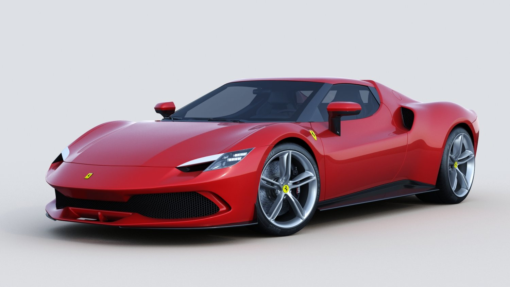

Vous revez de savoir quels sont les voiture sportives les plus connues et les plus vendues sur le marché de l'automobile ? Alors ce site va pouvoir répondre a vos questions !
1. Tesla Roadster (2023) : la derniere technologie de Elon Musk
Description :
La Tesla Roadster, deuxième édition, est une Supercar. Entièrement electrique,
elle serait capable de réaliser un 0 à 100 km/h en 2,1 secondes, une vitesse de pointe de 400 km/h et une autonomie de 1000 kilomètres.
Son prix de vente débute à 172 000 euros et une Founder Edition est disponible à 215 000 euros.
Avantages :
Performances impressionnantes
Autonomie électrique
Technologie avancée
Design attrayant
Exclusivité
Inconvénients :
Prix élevé
Disponibilité limitée
Autonomie limitée sur circuit
Entretien et réparations coûteux
Infrastructure de recharge
2. Porsche 911 (992) GT3 : Le coté dynamique
Description :
Le véritable territoire de la 911 GT3 avec Pack Touring est la route, en particulier si elle est jonchée de défis sinueux.
Avec une puissance de 510 ch (375 kW) et un moteur atmosphérique 6 cylindres à plat de 4,0 litres à haut régime, elle déborde d'énergie.
Certes, tout le monde ne la reconnaîtra pas immédiatement à son passage mais c'est exactement ce qui fait son charme si sophistiqué et ce qui donne envie de la conduire.
Avantages :
Performances exceptionnelles
Maniabilité exceptionnelle
Transmission manuelle disponible
Design emblématique
Qualité de fabrication
Polyvalence
Inconvénients :
Prix élevé
Places arrière limitées
Rigidité de suspension
Consommation de carburant
Options coûteuses
Entretien coûteux
3. Audi RS e-tron GT : Une voiture a haute performances !
Description :
L'Audi RS e-tron GT est une berline électrique qui s'équipe d'un moteur à transmission fournissant une puissance allant jusqu'à 440 kW de puissance et une accélération de 0 à 100 km/h en 3.3 secondes.
Côté autonomie, elle possède une batterie de 93.4 kWh qui lui fournira jusqu'à 465 km selon le cycle WLTP.
La prise en charge rapide est de la partie avec jusqu'à 270 kW de puissance de charge : 100 km WLTP obtenus avec 5 minutes de charge, ou de 5 à 80 % d'autonomie en 23 minutes de charge.
Avantages :
Performances électriques
Conception attrayante
Technologie avancée
Autonomie électrique
Transmission intégrale Quattro
Confort intérieur
Inconvénients :
Prix élevé
Poids élevé
Temps de recharge
Autonomie en utilisation intensive
Entretien et réparations coûteux
4. Chevrolet Corvette Z06 : Un prix démarquant
Description :
Le cœur de la Z06 est son moteur V8 7,0 LS7 délivrant 512 ch (377 kW) à 6.300 tr/mn avec un couple maximum de 637 Nm à 4.800 tr/mn.
Avec une voiture ne pesant que 1.418 kg, cela donne des accélérations de 0 à 100 km/h en 4,2 secondes en première et une vitesse de pointe de 320 km/h.
Avantages :
Performances exceptionnelles
Conception audacieuse
Maniabilité de pointe
Prix compétitif
Intérieur de haute qualité
Inconvénients :
Qualité des matériaux intérieurs
Places arrière limitées
Suspension sportive ferme
Consommation de carburant élevée
Coûts d'entretien
5. Lotus Emira : Une expérience passionnante
Description :
S'appuyant sur l'héritage Lotus, l'Emira bénéficie d'une conception intelligente,
de matériaux et d'une technologie de pointe pour offrir une stabilité accrue, une maniabilité exceptionnelle et un centre de gravité particulièrement bas.
Ce modèle ne demande qu'à être conduit.
Avantages :
Conduite passionnante
Design attrayant
Moteurs puissants
Qualité de fabrication
Légèreté
Inconvénients :
Prix élevé
Espace limité
Confort limité
Réseau de concessionnaires limité
Consommation de carburant
6. McLaren Artura : La meilleur de l'hybride

Description :
La McLaren Artura est la première sportivecar hybride rechargeable de série de la marque anglaise.
Elle revendique une puissance totale de 680 chevaux et une vitesse de pointe de 330 km/h.
Avantages :
Performances impressionnantes
Efficacité énergétique
Design aérodynamique
Conduite agile
Technologie embarquée avancée
Inconvénients :
Prix élevé
Espace limité
Capacité de chargement limitée
Réseau de concessionnaires limité
Coûts d'entretien
7. Ferrari 296 GTB: La luxury car

Description :
La 296 GTB, évolution du concept de berlinetta sportive biplace à moteur central-arrière de Ferrari,
représente une révolution pour la Maison de Maranello,
puisqu'elle introduit le nouveau moteur V6 à 120° associé à un moteur électrique rechargeable (VHR) capable de délivrer jusqu'à 830 ch.
La voiture redéfinit ainsi l'idée de plaisir au volant, pour garantir des émotions pures non seulement
lors de la recherche de performances maximales, mais aussi dans la conduite quotidienne
Avantages :
Performances exceptionnelles
Technologie hybride
Design exceptionnel
Intérieur de haute qualité
Conduite sportive
Inconvénients :
Prix élevé
Espace limité
Capacité de chargement limitée
Consommation de carburant élevée
Coûts d'entretiens élevés
8. BMW M4 (2023) : Une voiture polyvalente
Description :
La BMW M4 Coupé est un coupé sport épuré aux qualités de conduite exceptionnelles.
Ces qualités sont dues à un moteur BMW M TwinPower Turbo de 480 ch,
à une propulsion et à des technologies sophistiquées dérivées du sport automobile comme la suspension spécifique M avec différentiel M actif.
Avantages :
Performances impressionnantes
Conduite sportive
Intérieur de qualité
Technologie avancée
Style distinctif
Inconvénients :
Prix élevé
Confort limité
Consommation de carburant
Espace de rangement limité
Maintenance coûteuse
9. Nissan Z (2023) : Une conception modernisée
Description :
Le Z NISMO porte la puissance du moteur bi-turbo à 420 chevaux et 521 Nm de couple,
soit une augmentation de 20 chevaux et 46 Nm par rapport aux autres versions du coupé Z.
Le couple maximal est délivré entre 2 000 et 5 200 tr/min, ce qui garantit des performances élevées sur toute la plage de régime.
Avantages :
Performances abordables
Conduite sportive
Style attrayant
Transmission manuelle disponible
Fiabilité
Inconvénients :
Technologie dépassée
Consommation de carburant
Confort limité
Espace limité
Options limitées
10. Acura NSX : Une voiture de sport impressionnante
Description :
La supercar passe bien à l'hybride et à la transmission intégrale,
avec son V6 de 3,5 litres biturbo et trois moteurs électrique, un à l'arrière et deux à l'avant,
pour une puissance cumulée de 580 chevaux et un couple de 645 Nm.
Le tout géré par une boîte automatique neuf vitesses à double embrayage.
Avantages :
Performance exceptionnelle
Confort et qualité de conduite
Technologie avancée
Design sportif et élégant
Héritage de la première NSX
Inconvénients :
Prix élevé
Capacité de chargement limitée
Places arrière limitées
Entretien et réparations coûteux
Concurrence féroce